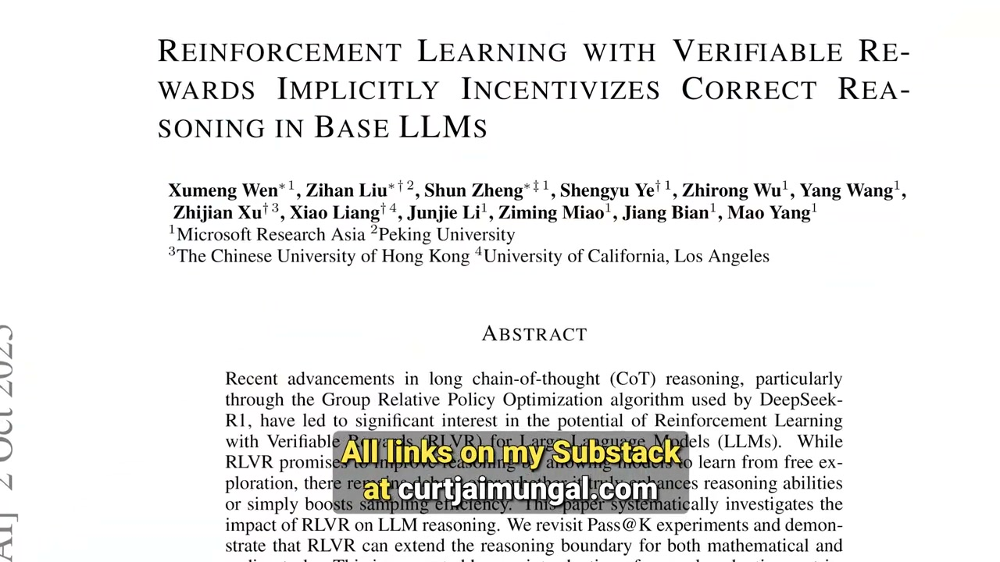
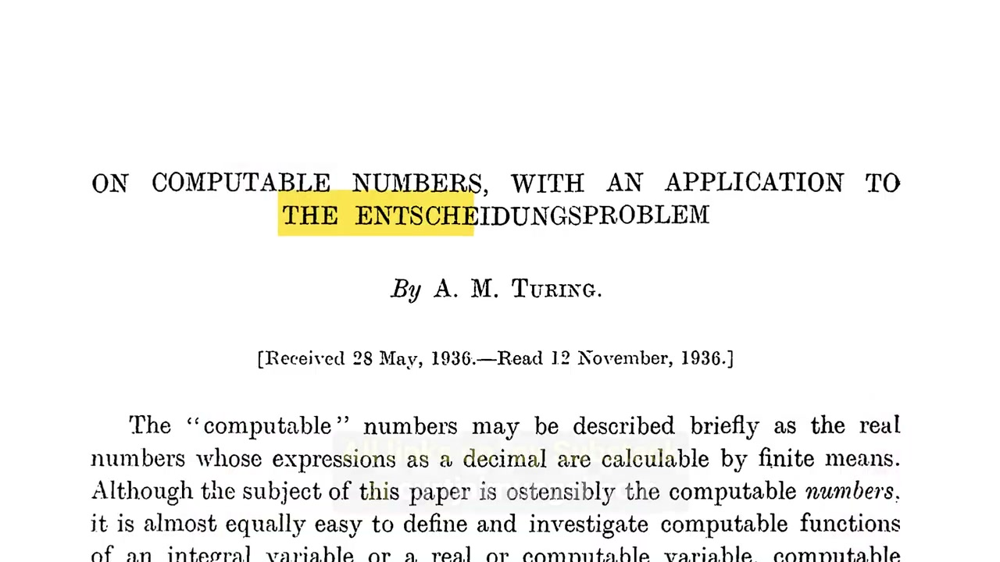

Executive summary
The bottleneck is reliable feedback about the physical world
Applied mathematician Jonathan Gorard begins from an asymmetry. AI systems have improved rapidly at software and formal mathematics because those domains expose strong verifiers: compilers, tests, type systems, proof assistants, and theorem checkers. Physics has equations and simulations, but it lacks an equivalent end-to-end mechanism for deciding whether a generated model is mathematically coherent, compatible with physical principles, numerically faithful, and supported by observation.
His company, Lanyon AI, is an attempt to build part of that missing substrate. Instead of asking a language model to emit a large program and then separately justify it, the proposed architecture has a model express a compact formal specification in a domain-specific language. Symbolic systems then derive implementation and proof artifacts from the same specification. This can tightly bind code to a declared model, but it does not automatically prove that the declaration captures nature or the user's intent.
- Verifiers shape capability. Domains with cheap, scalable, machine-checkable feedback are easier targets for reinforcement learning and autonomous iteration.
- Physics verification is layered. Logical consistency, compatibility with physical principles, numerical correctness, and agreement with observation are different obligations.
- Observation is not raw input. A statement such as “a particle was detected” rests on instruments, reconstruction software, calibration, statistical assumptions, and theory.
- Formal correctness has a semantic boundary. Proof and implementation can match a specification perfectly while the specification still fails to represent the intended system.
- Solutions and understanding are different products. A machine-checkable answer can establish correctness without transmitting insight to a human reader.
- The future of physics may be a language shift. Gorard expects AI to help search for new formal description languages, not merely solve more problems inside current ones.
Evidence boundary. The interview mixes documented projects, company claims, philosophical positions, and forecasts. Lanyon's public research demonstrates specific verified numerical methods; it does not establish a general proof assistant for all of physics or a solved pipeline from raw reality to verified theory. Claims about coming labor disruption, machine understanding, and future scientific languages remain arguments, not settled results.
The triggering event
A formalized sphere-packing proof collapsed Gorard's timeline
Gorard says his outlook changed in March 2026 when Math, Inc. announced a roughly 200,000-line Lean formalization of the sphere-packing results in dimensions 8 and 24. He had worked around automated theorem proving for a decade and expected this scale of autoformalization closer to 2028. Seeing it arrive earlier made the academic adjustment window look dangerously short.
He also adds an important correction: the public story was more complicated than “an AI independently solved everything.” A human-led formalization effort already existed, with a blueprint, maintainers, and a substantial codebase. Math, Inc. describes its Gauss system as completing the remaining 8-dimensional work and autoformalizing the 24-dimensional case. The distinction matters because acceleration, completion, library construction, and original discovery are not the same achievement.
What the event demonstrates
AI-assisted formalization can operate at a scale and speed that surprised an experienced researcher, producing a checkable artifact rather than prose alone.
What it does not demonstrate
That the original mathematics, formal blueprint, library engineering, and social process were unnecessary—or that every scientific domain has an equally strong verifier.
Science as product and process
Automation threatens a funding story as much as a workflow
Gorard distinguishes science as product from science as process. Product means outcomes society can point to: energy, medicine, materials, prediction, infrastructure. Process is the curiosity-driven activity scientists value intrinsically: understanding turbulence, quantum gravity, protein folding, or an elegant mathematical structure.
Modern research institutions often justify the process by promising that it will eventually produce useful outcomes. If machines become dramatically better at producing those outcomes, the old bargain may weaken even if human curiosity remains valuable. Gorard's concern is therefore institutional as well as technical: academic funding, prestige, career paths, and the identity of researchers may adjust much more slowly than capability.
Why coding and mathematics moved first
Reinforcement learning scales where success is cheap to check
The interview's most useful engineering argument is that recent capability gains depend heavily on post-training environments with verifiable rewards. Code can be compiled, executed, tested, type-checked, benchmarked, and inspected for static properties. Formal mathematics can be checked by a small trusted kernel. These feedback loops let a system generate attempts, receive an objective signal, and improve without requiring a human judgment for every trajectory.

Physics is not devoid of checks, but many are fragmented, expensive, approximate, or dependent on human interpretation. A simulation can run while violating conservation, stability, dimensional, regime, or measurement assumptions. A model can fit data while being physically implausible. An equation can be mathematically valid but irrelevant to the world being measured.
A verifier for physics
Correctness is a stack, not one green checkmark
Logical and mathematical
Are definitions well formed? Do claims follow from axioms? Are operators, spaces, and transformations used consistently?
Physical and numerical
Does the model respect relevant conservation laws, thermodynamics, covariance, stability, convergence, discretization, and finite-precision behavior?
Empirical and semantic
Do instruments and data support the claim under explicit calibration, reconstruction, uncertainty, regime, and background-theory assumptions?
The layers are nested but not reducible to one another. A proof of a numerical algorithm does not establish that its governing equations describe the target phenomenon. Agreement with one dataset does not prove internal consistency. A general verifier must expose which obligation is being checked, against which assumptions, and with which scope.
A historical precursor
Robin Gandy asked for a machine model of scientific reasoning
Gorard points to Robin Gandy, Alan Turing's doctoral student, whose thesis considered axiomatic systems in mathematics and physical theories. Gorard interprets its unfinished ambition as an analogue of a Turing machine for science: take empirical or sensory data, apply deductive and inductive operations, and produce physical hypotheses.

The analogy is powerful but incomplete. Scientific inference is not deduction over a closed formal system. It involves model selection, approximation, intervention, measurement error, changing instruments, causal assumptions, and uncertainty about whether the formal vocabulary itself is adequate.
Theory-ladenness
“We detected a particle” is the end of a long dependency chain
Gorard argues that observation cannot be treated as bare reality entering a machine. A detector produces electrical signals. Firmware, calibration, event reconstruction, filtering, statistical models, and prior physical theories turn those signals into the sentence “a particle was detected.” He estimates that such a statement may rest on 20 to 50 layers of theoretical assumptions.
This creates two forms of theory-ladenness. Semantic theory-ladenness concerns what words such as particle, temperature, field, or event mean inside a theory. Perceptual theory-ladenness concerns the instruments and transformations that make an observation accessible at all. An executable physics system must track these dependencies rather than pretending the final dataset is neutral.
Why mathematics is not sufficient
Our equations permit more worlds than the one we observe
Mathematical consistency alone underconstrains physics. Einstein's equations admit solutions with features we do not observe or may rule out using knowledge from elsewhere. Quantum field theory is extraordinarily successful in practice while its rigorous mathematical foundations remain incomplete. Physical principles can also be approximate, emergent, or regime-dependent rather than universal axioms.
A verifier must therefore handle limits and compatibility: does a proposed quantum-gravity model recover general relativity or known field behavior in the appropriate regime? Does a numerical method preserve the invariants its claim depends on? Which desiderata are hard constraints, and which are approximations that may cease to apply?
Lanyon's proposed architecture
Generate specification first; derive code and proof together
Lanyon describes a neurosymbolic pipeline. An LLM proposes a compact statement in a proprietary formal domain-specific language. Symbolic tooling expands that statement into implementation and proof artifacts. Because both descend from one specification, the implementation can be constrained to match the formal model rather than asking a second model to retrofit a proof onto arbitrary generated code.
The strongest claim this supports is structural: generated code can be made to match a formal specification by construction. It does not eliminate the semantic problem of whether the specification matches the user's intent, the experimental setup, or physical reality. Lanyon's own announcement explicitly distinguishes syntactic correctness from semantic correctness.
Description languages
Gorard's deeper bet is that representation determines discoverability
The conversation moves beyond verification into a philosophical thesis: apparent mysteries may be artifacts of the language used to describe them. Hamiltonian and Lagrangian mechanics can encode the same observations through very different ontologies. Information-theoretic language made problems about entropy and computation easier to formulate than older mechanical descriptions.
Natural philosophy
Qualitative accounts of matter, motion, cause, and change.
Geometry
Spatial relations became a disciplined language for optics and astronomy.
Analysis
Calculus and differential equations mechanized continuous change.
Computation
Algorithms, state transitions, and information exposed new invariants.
Scientific DSLs
Gorard wants formalisms that bind theories, implementations, and observations.
His ambitious proposal is to automate not only inference inside a language but also the search for better languages. That is a research direction, not a demonstrated general capability. It would require criteria for comparing representations without collapsing novelty into what current verifiers already know how to reward.
The paper deluge
More hypotheses without stronger filters produce scientific congestion
The interview warns that AI can amplify an existing problem: producing more papers than communities can evaluate, integrate, or reproduce. Generation is not progress by itself. A useful scientific agent must help identify contradictions, duplicated assumptions, invalid regimes, missing evidence, and connections to established theory.
This reframes the “AI scientist” from a paper generator into a maintenance system for knowledge. The difficult work includes provenance, dependency tracking, verification scope, library governance, experimental metadata, and deciding when two apparently different claims are equivalent under a change of representation.
Solutions versus understanding
A proof can be correct without transferring insight
Curt asks whether solving a hard theorem should count as understanding it. Gorard separates possessing a valid solution from transmitting a mental model to another mind. This difficulty predates AI: a mathematician may know a proof and still fail to explain why the key construction is natural or how it changes the surrounding landscape.
Certificate of correctness
Lets a checker establish that stated conclusions follow under declared assumptions. It is an audit artifact.
Human-transmissible insight
Provides abstractions, examples, counterexamples, causal stories, and nearby questions that reorganize a reader's understanding.
An AI-native representation may be efficient for search or proof while expensive to translate into human concepts. Asking the system for an explanation does not guarantee that the explanation faithfully reflects the internal route. A serious interface should preserve links from summary claims back to formal objects, dependencies, experiments, and uncertainty.
Embodiment
Scientific language inherits the body and instruments that formed it
Gorard considers whether reasoning must be embodied. Arithmetic grew from exchange; geometry from land and space; later abstractions retained structures inherited from human interaction with the physical world. A disembodied intelligence might develop different primitive concepts, while an experimental AI cannot avoid sensors, apparatus, interventions, and physical failure modes.
The practical lesson is modest: adding a camera or robot body is not enough. The system needs a typed account of instrument capability, calibration, environmental conditions, control actions, uncertainty, and the chain connecting sensor states to scientific claims.
Concrete work
Verified PDE solvers show what a bounded version can look like
Gorard and Ammar Hakim's “Shock with Confidence” work presents a pipeline for constructing hyperbolic PDE solvers, generating C code, and producing formal proofs of properties including stability, flux conservation, and physical validity. Crucially, it reasons about finite-precision arithmetic rather than silently replacing machine numbers with ideal real numbers.
The later BEACONS project explores neural PDE solvers with bounded error, compositional structure, and machine-checkable correctness certificates. These projects make the broader vision concrete, but within a bounded class of equations and declared properties. They should be read as research foundations, not evidence that arbitrary physical theories can already be verified end to end.
The changing physicist
The workflow may disappear before curiosity does
Much of the interview is emotionally direct. Gorard describes grieving a style of theoretical work built around long projects, gradual insight, and individual intellectual craft. He expects physical experimentation to change more slowly because hardware, laboratories, and real-world interventions retain friction, though that protection may erode as robotics and “physical AI” improve.
His optimistic position is continuity of motivation rather than continuity of tasks. Physicists may spend less time performing familiar symbolic derivations and more time designing representations, choosing experiments, auditing assumptions, interpreting machine-generated structures, maintaining formal libraries, and deciding which questions deserve scarce physical resources.
My take
The verification thesis is stronger than the automation forecast
The interview's strongest claim is architectural: capability grows faster where feedback is objective, cheap, and composable. Building richer verifiers for scientific computing is valuable even if sweeping forecasts about automated discovery prove wrong. Verified solvers, traceable assumptions, explicit regimes, and code generated from shared specifications would improve ordinary human science too.
The weakest step is moving from verified numerical artifacts to “executable physics” in general. Nature does not provide a proof kernel. Empirical adequacy changes with instruments and data; theories are underdetermined; specifications can misstate intent; and the search for a new description language requires objectives that may encode today's blind spots.
The practical conclusion is therefore not “replace physicists with agents.” It is: treat scientific AI as a system of contracts. Name the claim, assumptions, regime, implementation, numerical guarantees, data lineage, uncertainty, and failed checks. Make every generated result navigable back to those contracts. That is a credible route from fluent output toward trustworthy scientific work.
Video map
Navigate the two-hour conversation
- The sphere-packing shock and compressed timelines
- Science as product versus science as process
- Curiosity, hedonism, and the social bargain of research
- Why academia was slow to engage with AI
- Why Gorard left Princeton to form Lanyon AI
- Robin Gandy and the formalization of physics
- Theory-ladenness of observation
- Why mathematical consistency is not enough
- Description languages and AI reasoning
- Filtering the scientific-paper deluge
- Can AI transmit understanding?
- Human-readable explanations of AI reasoning
- Must scientific AI be embodied?
- Mysteries as description-language artifacts
- Grieving a style of physics
- What remains for physicists?
- The next formal description language
- Spacetime discreteness, verified PDEs, and BEACONS
Sources
Primary interview and technical references
- Curt Jaimungal — The Physicist Revolutionizing Physics With AI. Primary interview and publisher-supplied English caption track.
- Math, Inc. — Completing the formal proof of higher-dimensional sphere packing. Project account, human collaborators, prior formalization, scale, and released Lean work.
- Lanyon AI — Announcing Lanyon AI. Company description of the DSL-plus-symbolic architecture and its explicit syntactic-versus-semantic correctness boundary.
- Lanyon AI — Our Vision. Gorard's description-language thesis and proposed direction for scientific AI.
- Gorard and Hakim — Shock with Confidence. Formal verification pipeline for hyperbolic PDE solvers and finite-precision correctness properties.
- Gorard, Hakim, and Juno — BEACONS. Bounded-error, algebraically composable neural PDE solvers with machine-checkable certificates.
- Robin Gandy — On Axiomatic Systems in Mathematics and Theories in Physics. Historical thesis discussed as a precursor to formal scientific reasoning.
Source review completed October 6, 2026. The hero is the publisher's 1280×720 thumbnail. The two in-article images are 1280×720 frames captured from the source video at 36:10 and 37:00, with explanatory captions. The remaining visuals are article-native HTML/CSS diagrams so they remain sharp and readable on mobile.